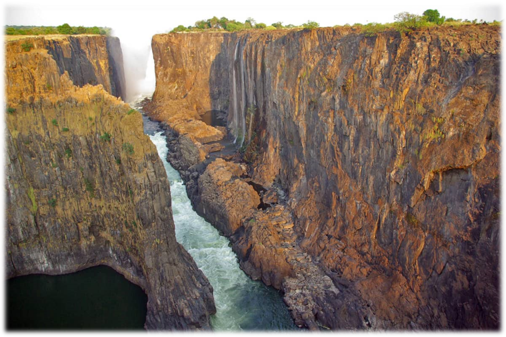

Африка

Нил
Нил – одна из крупных рек, находящихся на континенте Африка. Протяженность гораздо больше, чем у остальных водоемов. С течением времени на берегах появлялись государства, которые осуществили рыболовство, распространили товары через суда. Здесь добывают очищенную воду по сей день.
Благодаря плотинам происходит оживление даже самых высохших земель. Насыщение водой происходит за счет осадков весной и осенью. Часто река выходит за границы. Появляются наводнения, негативно сказывающиеся на сельском хозяйстве в небольших и крупных городах, расположенных вдоль берегов.
Для зимы и лета характерна засуха, затяжные дожди не появляются. Объем воды в реке становится меньше. Увеличение объема воды незначительно происходит за счет притоков и озер, с которыми соединяется Нил. Режим реки полностью зависит от климата. Если появляются сильные дожди, движение ускоряется. Но в основном — это равнинное течение с небольшой скоростью. Лишь в одной точке, где расположены пороги, его скорость всегда большая. Там Нил наиболее опасен, поэтому прохождение судов невозможно.
В Египте и других странах, расположенных на побережье Нила, находится множество сооружений. Здесь развито судоходство. Использование природных ресурсов сопряжено с загрязнением вод. Туда сбрасывают отходы, продукты нефтепереработки. Поэтому многие виды флоры и фауны быстро погибают.
В некоторые озера, питающиеся от Нила, заселяют хищные виды рыб, нарушающие соотношение видов. Например, Нильский окунь, который быстро уничтожил сотни видов рыб.
<Нажми меня, чтобы узнать больше>Конго
Конго имеет статус самой глубокой реки мира. Ее воды простираются на несколько тысяч километров. Располагается она в центре Африки, два раза пересекает экватор, поражает богатством растительного и животного мира. Это главная достопримечательность материка. Бассейн Конго располагается в центре континента, который по своей площади стоит на 2 месте после Евразии. Дельта реки расположена вблизи города Бома. В этой местности Конго впадает в воду Атлантического океана. Ее течение чувствуется еще за 17 км до места соединения соленых и пресных вод.
Название река берет от Королевства Конго, которое когда-то располагалось на южном ее берегу. Оно в свою очередь взяло имя от коренного народа, народа Конго, в 17 веке известного как «Эсиконго». Название племени переводится, как «общественное собрание». Конго – особенная река, бассейн которой проходит одновременно и в субэкваториальном, и в экваториальном климате. Не редкостью здесь являются обильные дождевые осадки. Условно год делится на 2 сезона: сухой и мокрый. Конго является источником пресной воды и пищи.

Это река с большим потенциалом. На фоне своей многоводности она выступает поставщиком энергии. На ней располагается несколько крупных электростанций, которых вместе с маленькими насчитывается около 40. С их помощью обеспечивается энергией значительная часть материка.
<Нажми меня, чтобы узнать больше>Нигер
От этой реки зависит жизнь более 130 млн человек в пяти странах в Западной Африке. Ее особенность в том, что вода в ней намного чище, чем во всех остальных реках Африки. Бассейн этой реки – важный экономический, энергетический и водный ресурс таких стран, как Бенин, Нигер, Мали, Нигерия и Гвинея. Бассейн Нигера был образован схождением нескольких тектонических плит 3 000-5 000 лет назад, благодаря чему произошло слияние двух отдельных рек в одну. В ней вода более прозрачная, чем в других африканских реках из-за того, что она берет свое начало на скальной возвышенности.

Будучи часть пути горным потоком, она не подхватывает частички почвы, а потому ее вода остается чистой. Несмотря на это, в дельту реки ежегодно приносится до 65-67 млн тонн ила. Бассейн этой реки простирается на 2,118 млн км2 от Гвинейского нагорья до Гвинейского залива в Атлантическом океане. Расход воды в устье составляет 8630 м³/с. Начинаясь в нагорье Фута-Джаллон (горный массив в Гвинее, часть Леоно-Либерийской возвышенности), Нигер вначале течет на северо-восток (160 км) по узкой долине.

Здесь у реки характер полугорный, но с выходом на равнину становится спокойным, с постепенным разбиванием сначала на несколько рукавов, а затем на многочисленные протоки, которые образуют внутреннюю дельту. Особенность последней в том, что в сезон дождей она разливается, заливая 30 тыс.км2 земли.
На реке развито судоходство, особенно в части, протекающей в Нигерии от города Ниамей и до самого океана. До сих пор для многих африканских семей эта река является и поставщиком воды, и источником пищи, ведь до 70 % рациона местных жителей составляет рыба.
<Нажми меня, чтобы узнать больше>Замбези
Замбези – крупная река на юге Африки. На ней расположен знаменитый водопад Виктория. Замбези начинает свой путь в Замбии. Река течёт через Анголу, по границе Намибии, Ботсваны, Замбии и Зимбабве, к Мозамбику, где впадает в Индийский океан. Протяжённость реки: 2574 км. Замбези на четвёртом месте по протяжённости на континенте, уступая Нилу, Конго и Нигеру.
Площадь бассейна Замбези: 1 570 000 км². В верхней части река течет на юго-запад, иногда меняя направление на восточное. После водопада Виктория начинается средняя часть реки, и Замбези течёт строго на восток. В этой области течение образует многочисленные перекаты, стремнины и пороги. В нижней части, пересекая водохранилище Кабора-Басса, река перенаправляет течение на запад. На расстоянии 160 км от Индийского океана разделяется на протоки, образуя дельту в манговых зарослях.
На Замбези развито рыболовство, которое составляет значительную часть экономики Замбии. Во время рыболовного сезона к реке стекается много людей из засушливых районов. Также на Замбези организовано спортивное рыболовство и сафари. В Замбези сбрасываются сточные воды. Из-за отсутствия очистных сооружений вода загрязняется. Это приводит к распространению дифтерии и тифа, а также к сокращению территории мангровых лесов.
<Нажми меня, чтобы узнать больше>